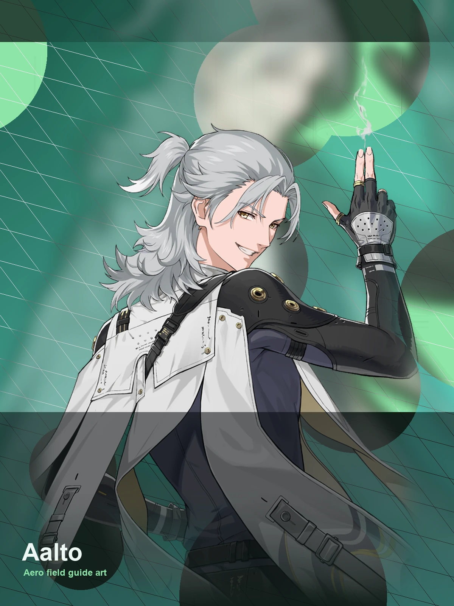

Wuthering Waves Resonator guide
Aalto build, teams, weapons, and Echoes
Aero ranged helper with movement tools.
Aero
Pistols
Sub DPS
4★ Resonator
Verified
Aalto quick build
- Role
- Sub DPS
- Team type
- Flexible team shell
- Best weapon
- The Last Dance
- Sonata
- Moonlit Clouds
- Echo cost
- 4-3-3-1-1
- Main Echo
- Impermanence Heron
- Main stats
- CRIT DMG or CRIT Rate / Aero DMG or Energy Regen / ATK%
Best team direction
WaveKit currently treats Aalto / Flexible support / Sustain as the clearest reference shell for Aalto where those pieces are available.
If your account is missing part of that shell, use the team helper to find safer owned replacements instead of forcing a team that does not fit your roster.
How to use this guide
This page is a quick public reference. The interactive WaveKit helper can personalise suggestions using your owned Resonators, Resonance Chains, Rover forms, and weapons.